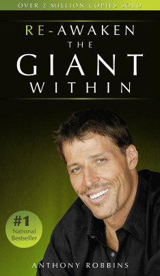

By Tony Robbins
"Awaken the Giant Within" by Tony Robbins is a powerful self-help book that focuses on helping individuals take control of their emotions, behaviors, and life to create lasting change. Robbins discusses how mastering your mind, emotions, and actions can lead to ultimate success, happiness, and fulfillment. This book is designed to help you unlock your potential and transform your life by taking control of your decisions and developing empowering habits.
"Awaken the Giant Within" is a motivational and practical guide to creating positive change in all areas of your life. Tony Robbins shows readers that it’s not about what happens to you, but how you react and the actions you take in response to life’s challenges. By mastering your mind and emotions, and by making decisions that align with your highest values, you can unlock the giant within you and achieve your fullest potential.